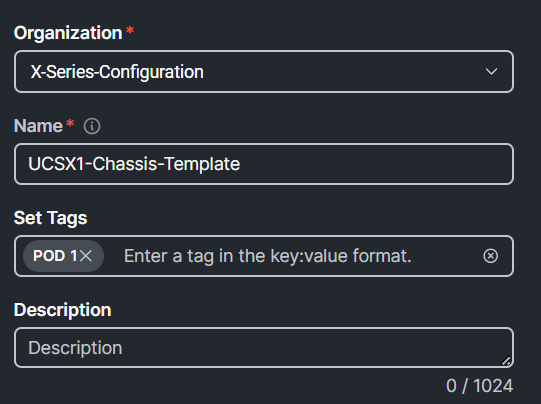
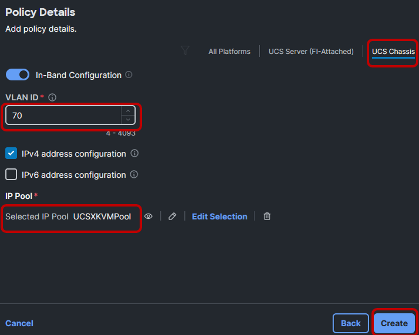
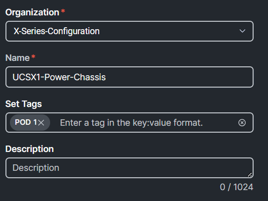
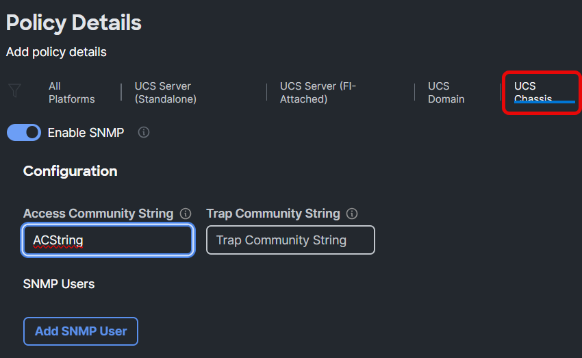
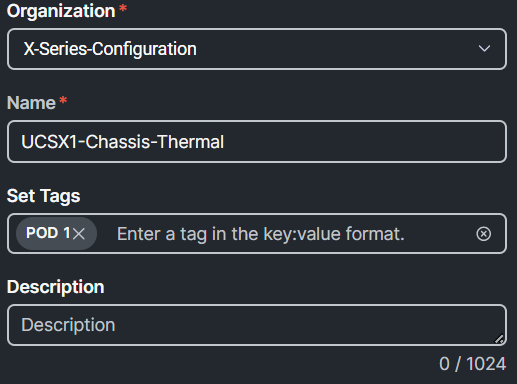
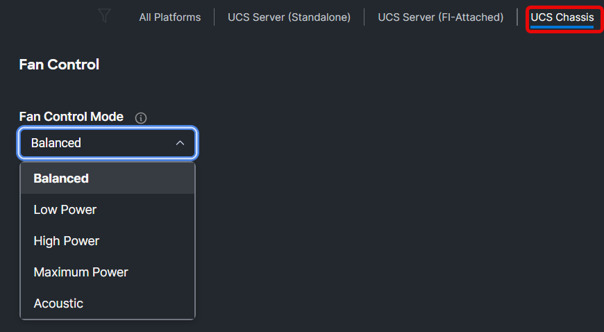

Task 3: Create Chassis Policy Template
To create a Chassis Profile Template, Go to Templates, UCS Chassis Profile Template, and click Create UCS Chassis Profile Template:

Provide a name, set the tag, and click Next:

Create a new IMC Access Policy by clicking Select Policy next to IMC Access and then click Create Policy. Provide a name, set the tag, and click Next:

Select the UCS Chassis tab, change the VLAN ID to 70, click Select IP Pool under IP Pool, select the UCSXKVMPool radio button from the list, press Select, then press Create:

Best practice:
- Every chassis do need two IP addresses from a pool. Create a separate Chassis-IP-Pool which is non overlapping with other IP Pools
Create a new Power Policy by clicking Select Policy next to Power and then click Create Policy. Provide a name, set the tag, and click Next:

Select UCS Chassis, ensure Grid is selected for the Power Redundancy Policy, and click Create:

Best Practices
Redundancy per customer requirements
Default options recommended for others
Dynamic power rebalancing will re-allocate power between servers if competing for power in power constrained environments.
Power allocation sets an input power limit. Throttling is used to stay within the limit.
Create a new Chassis SNMP Policy by clicking Select Policy next to SNMP and then click Create Policy. Provide a name, set the tag, and click Next:

Select UCS Chassis, type ACString in the Access Community String, and click Create:

Create a new Chassis Thermal Policy by clicking Select Policy next to Thermal and then click Create Policy. Provide a name, set the tag, and click Next:

.Best Practices
Applies to chassis or rack mount servers
Sets the base fan speed
Workloads with frequent transitions from idle to max may throttle while fan speeds ramp from lower levels.
Increase policy to prevent throttling.
Select UCS Chassis, ensure Balanced is selected for the Fan Control Mode, and click Create.

After the creation of the policies, the chassis configuration should look similar to the image below. Click Next and Close. (Do NOT click Derive Profiles):